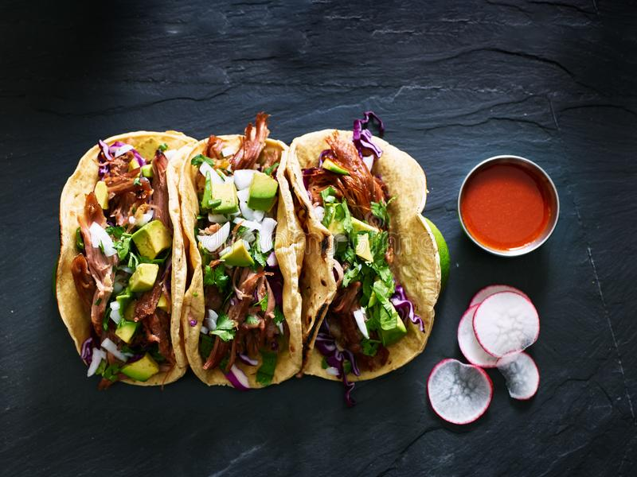
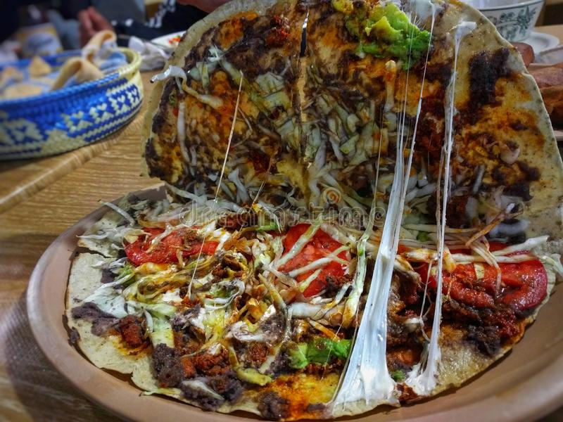
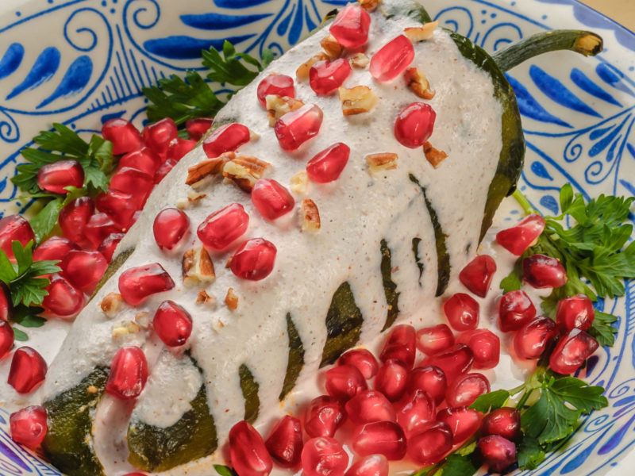

Global Food
México
Tacos

Consiste en una tortilla, generalmente de maíz, que comúnmente se enrolla para contener dentro diversos ingredientes y algún tipo de salsa. Es de las preparaciones mas recurrentes de la cocina mexicana.
Tlayuda

Es una tortilla de maíz que se dora sobre un comal, lo cual le da mayor dureza que la tortilla convencional, a la que se le agrega queso, lechuga, tasajo asado o cecina de res y salsa picante hecha en molcajete. Para que finalmente, la tlayuda se coloce sobre el anafre a que se tueste y quede crujiente.
Chiles de Nogada

Se prepara con chile poblano, relleno de un guisado de picadillo y frutas, que incluye acitrón, y para finalizar, se cubre con crema de nuez de Castilla,hojas de perejil y granos de granada.